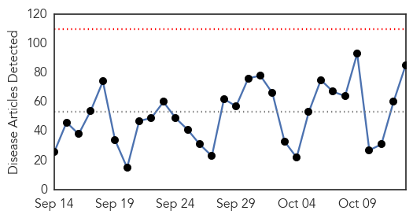
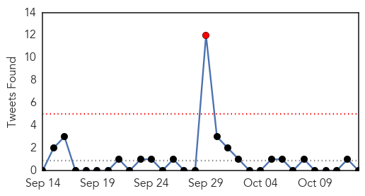
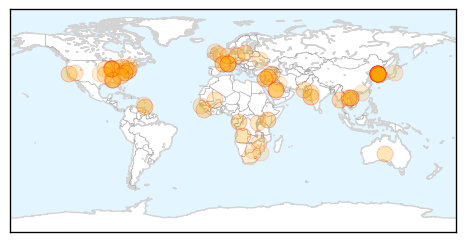
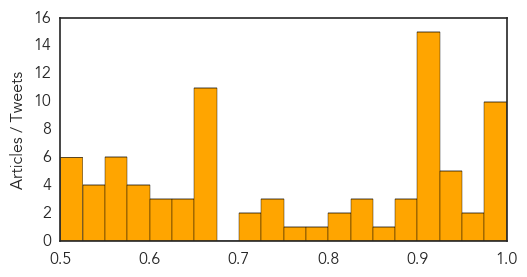

Unknown
30-Day Web Trend
0 alerts, 0 warnings

30-Day Twitter Trend
1 alerts, 0 warnings

Article Locations

Article Confidences
Top Articles:
- 0.999
- South Korean man cleared of Mers tests positive again, Asia News & Top Stories
- 0.999
- Declaration of end to MERS likely to be delayed
- 0.998
- Malaysia General Business Sports and Lifestyle News
- 0.998
- Former MERS patient in South Korea re-diagnosed with virus
- 0.998
- Former MERS patient in South Korea re-diagnosed with virus
- 0.997
- KBS World Radio
- 0.997
- The Chosun Ilbo (English Edition): Daily News from Korea
- 0.997
- The World On Arirang
- 0.989
- (MERS virus) Infected South Korean returns to hospital
- 0.984
- MERS patient tests positive 9 days after discharge-INSIDE Korea JoongAng Daily
- 0.964
- No outbreak of Hand, Foot and Mouth Disease in T&T
- 0.956
- Last MERS patient tests positive
- 0.950
- Your Questions Answered
- 0.948
- Alabama Lyme disease cases drop this year after spike in 2014
- 0.942
- Laos reports 1st indigenous polio case since 1993
- 0.942
- Free Flu Shots November 10th
- 0.930
- 2 MERS cases monitored
- 0.924
- Fatal case of vaccine-derived polio in Laos, reports WHO -
- 0.917
- Chicago Tribune
- 0.917
- Chicago Tribune
- 0.917
- Chicago Tribune
- 0.917
- Chicago Tribune
- 0.917
- Chicago Tribune
- 0.917
- Chicago Tribune
- 0.917
- Chicago Tribune
- 0.917
- Chicago Tribune
- 0.917
- Chicago Tribune
- 0.917
- Chicago Tribune
- 0.917
- Chicago Tribune
- 0.917
- Chicago Tribune
- 0.908
- Polio-Virus Killed 8-year-old boy In Laos
- 0.904
- African Health Officials Hail Artemisinin For Combating Malaria
- 0.883
- County hold flu shot clinic - Story
- 0.879
- Free flu shots available in the Union
- 0.877
- Russians Must Prepare for Flu Epidemic
- 0.873
- Healthcast: Bad flu season
- 0.842
- Ministry of Health give Lymphatic Filariasis drugs
- 0.833
- Flu vaccine clinics begin around the area
- 0.826
- OFFICIALS: Lyme disease now ‘epidemic’ in seven Alabama counties, including Chambers and Russell
- 0.812
- VMC to conduct survey after jaundice outbreak
- 0.811
- Enterovirus D68 Not Associated With Higher Death Rate in Children
- 0.798
- Man admitted to CHK with Naegleria-like symptoms
- 0.751
- DAY BREAK 06:00 Korea′s last MERS patient re-diagnosed with disease
- 0.748
- Global Efforts To Eradicate Polio Suffers Setback With New Case In Lagos
- 0.732
- Treatment Participation, Access to Emergency Services and Choice of Plans All Part of Patient Rights
- 0.728
- Mumbai MTB Hospital Express Concern Over Deaths Of Staff Members
- 0.719
- Fifty poor patients with complex cases treated abroad in 2014
- 0.703
- Paris supermarket gunman Coulibaly ‘acted on orders’
- 0.673
- US airdrops ammunition to Syria rebels
- 0.673
- ‘Task Force Lafayette’: French veterans volunteer to fight IS group
Showing top 50 articles...
Top Tweets:
-
No tweets found for Oct 13, 2015